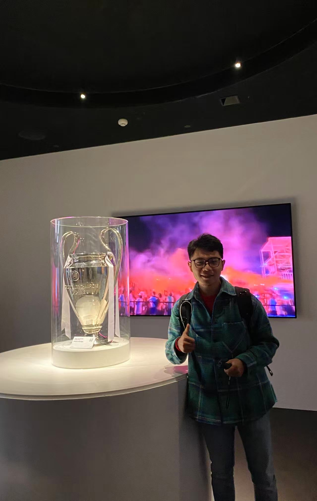
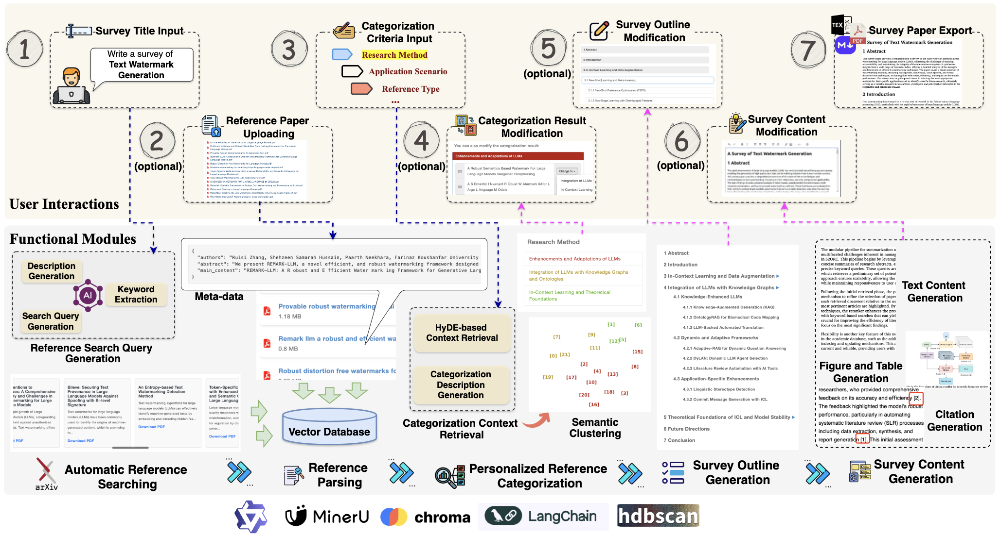
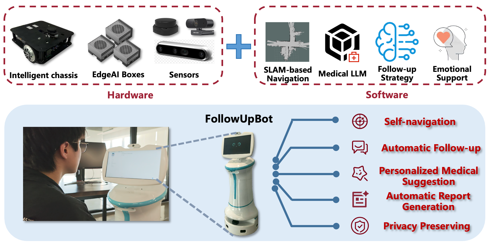
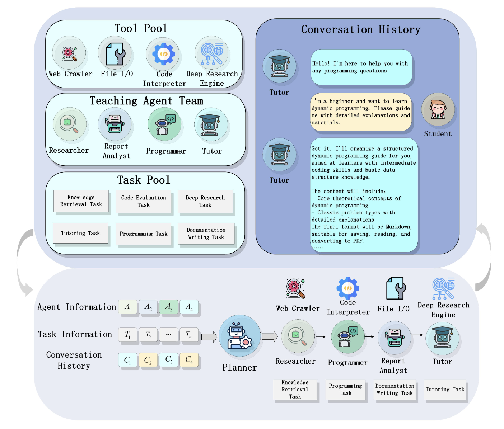
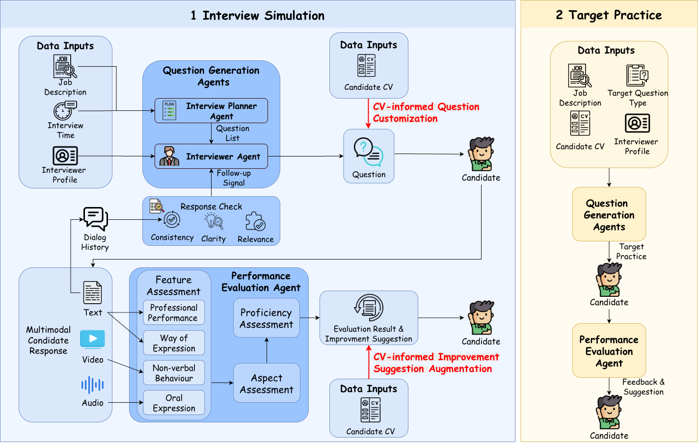
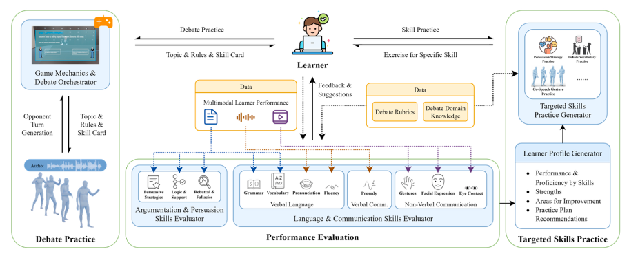

Research Assistant Professor
The Hong Kong Polytechnic University
(Curriculum Vitae)
Email: zyuanwen@polyu.edu.hk
Office: PQ 831, Mong Man Wai Building

InteractiveSurvey: An LLM-based Personalized and Interactive Survey Paper Generation System
Zhiyuan Wen, Jiannong Cao, Zian Wang, Beichen Guo, Ruosong Yang, Shuaiqi Liu
Arxiv Preprint
[Demo Paper] [Introduction Page (with Demo Video)]

FollowUpBot: An LLM-Based Conversational Robot for Automatic Postoperative Follow-up Collaboration with Guangdong Provincial People's Hospital (广东省人民医院)
Chen Chen, Jianing Yin, Jiannong Cao, Zhiyuan Wen, Mingjin Zhang, Weixun Gao,
Xiang Wang, Haihua Shu
The 12th International Conference on Behavioural and Social Computing (BESC'25)
[Demo Paper] [Introduction Video (Bilibili)]

CodeEdu: A Multi-Agent Collaborative Platform for Personalized Coding Education Collaboration with China Mobile (Hong Kong) Innovation and Research Institute
Jianing Zhao, Peng Gao, Jiannong Cao, Zhiyuan Wen, Chen Chen, Jianing Yin, Ruosong Yang, Bo Yuan
The 12th International Conference on Behavioural and Social Computing (BESC'25)
[Demo Paper] [Demo Video (Youtube)] [Code]

PolyInterview: Personalized and Multi-modal Interview Simulation with LLM Agents
Zhiyuan Wen, Xiaoyun Liu, Zijian Wang, Chen Chen, Jialun Zheng, Jianing Yin, Haochen Shi, Jiannong Cao
[Demo Introduction Page] [Demo Video (Youtube)]

DebateArena: Multi-modal Debate Skill Practice with LLM Agents
Jianing Yin, Zhiyuan Wen, Zijian Wang, Chen Chen, Jiannong Cao
[Demo Video (Bilibili)]
Thanks to Vasilios Mavroudis for the template!